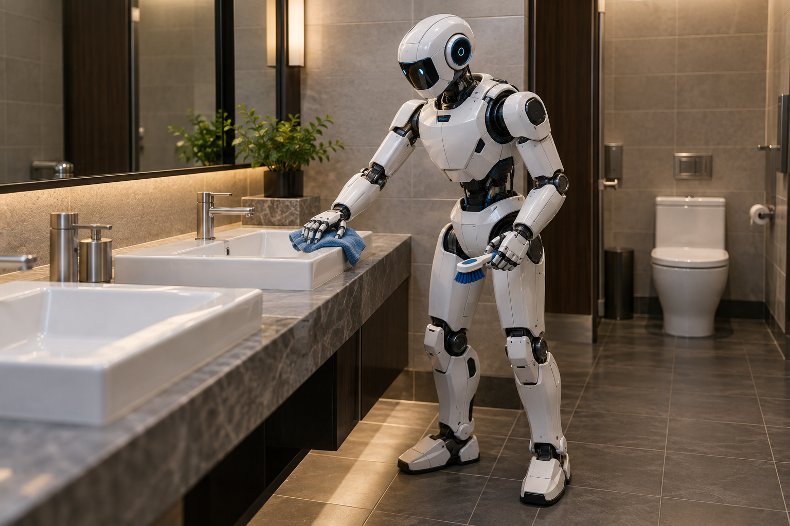
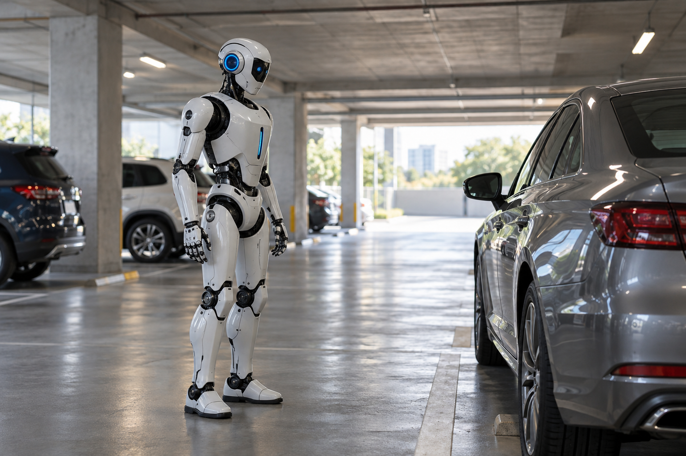
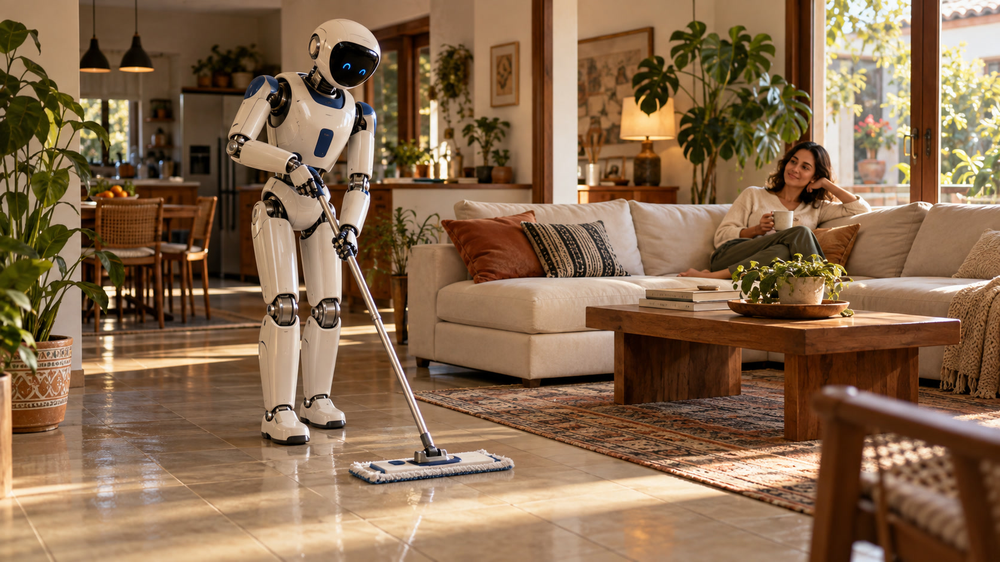

01 / RESTAURANTES
Limpieza del baño
Una rutina de limpieza definida, con las herramientas y el área de trabajo acordadas para el robot.
COGNITION INDUSTRIES · PHYLAX AI
Cómpralo o alquílalo. Para el día a día o para una tarea puntual.
Corto conceptual · 30 segundos · Pídelo. Dile qué hacer. Recíbelo en casa.
EN TU CASA. EN TU NEGOCIO.
Desde limpiar tu casa y el baño de tu restaurante hasta cuidar tu parqueadero o empacar en tu fábrica. Mira cómo imaginamos cada tarea.

Una rutina de limpieza definida, con las herramientas y el área de trabajo acordadas para el robot.

Recorridos de observación en puntos definidos, con alertas dirigidas a tu equipo.
Una secuencia repetible de empaque, con productos, cajas y puesto de trabajo definidos.

Limpiar el piso de la sala: una rutina de todos los días o una ayuda para un día puntual.
Visualizaciones conceptuales. La viabilidad se valida según el robot, las herramientas y el entorno de operación.
Lee el aviso sobre escenas conceptuales y capacidades de los robots
Describe qué superficies debe limpiar el robot, con qué herramientas y en qué horario.
HARDWARE ROBÓTICO
Para tu casa, tu tienda o tu fábrica. Buscamos contigo el equipo que encaje con la tarea y el lugar donde va a trabajar.
Para tareas con manos: limpiar, acomodar o empacar. La tarea se prepara según el robot y las herramientas que necesite.
Para recorrer tu finca, tu parqueadero o tus instalaciones y ayudar a revisar lo que pasa a su alrededor.
Modelo, disponibilidad, precio, entrega y condiciones de importación se confirman en la cotización.
PHYLAX AI / CLOUD
Con Phylax AI, la idea es sencilla: le dices al robot qué necesitas, con tu voz o con un video. Nosotros preparamos la tarea para el equipo que vas a usar.
UNA INTEGRACIÓN A TU MEDIDA
El control del equipo, la conectividad y los límites de operación se acuerdan para cada implementación.
Tu robot y Phylax AI, juntos para la tarea que necesitas.
Dinos cuál tienes y qué quieres que haga. Revisamos si podemos conectarlo.
Antes de decidir, sabrás qué incluye el equipo, el servicio y la ayuda de nuestro equipo.
PHYLAX AI / LA APP DE TU ROBOT
Abres la app, eliges tu robot y le cuentas qué necesitas con tu voz. Si te resulta más fácil, subes un video mostrando cómo haces la tarea.
Una tarea para tu casa o negocio
¿Qué debe hacer tu robot?
Limpia el lavamanos y las superficies del baño del restaurante. Sigue el orden que muestro en el video y trabaja dentro del área asignada.
Muestra cómo haces la tarea
Interfaz conceptual; no es una app de control operativa. La compatibilidad y las tareas requieren configuración y pruebas.
Vista conceptual del flujo de Phylax AI.
REPUESTOS DE HUMANOIDES
Solicita repuestos por modelo y referencia. Revisamos compatibilidad y disponibilidad antes de cotizar.
Indica fabricante, modelo, número de parte y cantidad. Las referencias se ofrecen sujetas a disponibilidad.
CÓMO TRABAJAMOS
¿Qué quieres que haga en tu casa, tu tienda o tu fábrica?
Compra o alquiler. Todos los días o solo cuando lo necesites.
Acordamos el equipo, la tarea, el precio y las condiciones.
Coordinamos el envío y la puesta en marcha para la tarea acordada.
EMPECEMOS CON TU TAREA
Cuéntanos qué necesitas. Preparamos tu solicitud para conversar por WhatsApp.
+1 754 300 6570ANTES DE COTIZAR
Sí, puedes consultar por alquiler para una tarea puntual o para una rutina permanente. Cuéntanos qué necesitas y por cuánto tiempo; te confirmamos disponibilidad, precio y condiciones antes de reservar.
Sí. Puedes solicitar una propuesta de hardware o una propuesta que incluya integración y Cloud IA. El alcance se define según tu necesidad.
La compatibilidad se evalúa por modelo, SDK, conectividad y tarea. Si ya tienes un equipo, comparte esos datos antes de cotizar la integración.
Depende del equipo, la configuración, el país de destino y el alcance de integración. Hardware, servicios y costos asociados se detallan en la propuesta.
Fabricante, modelo del humanoide, referencia de la pieza, cantidad y país de entrega. Si no conoces la referencia, descríbenos el componente y comparte sus datos por WhatsApp.